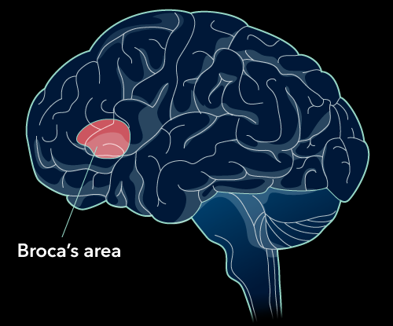
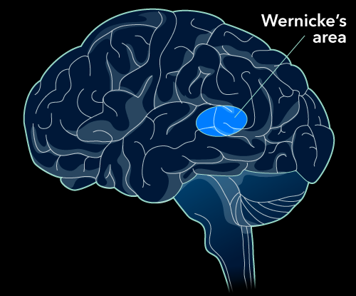

Summary
- Language is not only mimicking words, signs, or sounds, but the
ability to use grammar, symbols, and demonstrate productivity.
- Productivity is the ability to create novel messages that
communicate new ideas.
- Children show a cross-cultural trajectory in the development of
language ability, with rapid acquisition occurring in the first years of
life and grammatical fine-tuning occurring by age 4–5. (See Table 9.1
for the full sequence.)
- Infants’ auditory systems fine-tune themselves to be sensitive to
the sounds present in their native language, as well as important tonal
differences in a language (such as in the Mandarin word “ma”).
- Grammar refers to the systematic rules of a language, which
importantly includes syntax: The ordering of words in an utterance is
important for meaning.
- Behaviorist B.F. Skinner believed that language, or as he called it,
“verbal behavior,” could be learned through the application of operant
learning theories (e.g., reinforcement of appropriate sounds and
non-reinforcement or punishment of inappropriate sounds).
- Child-directed speech is typically more abbreviated and uses a wider
range of pitches, which is thought to facilitate the processing of word
recognition in infants.
- Environmental factors alone do not seem to be able to explain
children’s rapid acquisition of language; as a result, Noam Chomsky and
language nativists have argued that our brains have evolved to be
specially prepared to acquire language (i.e., they have a built-in
“language acquisition device”). Children appear to experience a critical
period before age two and a sensitive period after age two when it comes
to language acquisition; beginning to learn a language before two
results in typical language development, while learning a language in
childhood after two is still more effective than attempting to do so
later in life.
- Word order tends to be consistent within a language (e.g.,
subject-verb-object (SOV); boy-dumps-water), and gestural languages tend
to use SOV word order.
- The emergentist perspective on language acknowledges the roles of
both biology and experience, pointing toward the role of genetics to
prepare us for language and the environment’s role in specializing us
for the language(s) we hear as children.
- The left hemisphere of the brain appears to be specialized in
producing and consciously understanding language.
- Broca’s area in the lower left frontal lobe is responsible for
language production, and damage to this area results in non-fluent
aphasia (a difficulty producing words).
- Wernicke’s area in the temporal lobe is responsible for conscious
language comprehension, and damage to this area results in fluent
aphasia (difficulty in conveying meaningful utterances). The average
person has 50,000–100,000 words in their mental lexicon, which is
organized into related groups using pieces of sound information
(phonemes) and pieces of meaningful information (morphemes).
- Semantic networks organize the mental lexicon meaningfully by
relating concepts based on their defining features.
- Family resemblance theory argues that we categorize new things in
the world by comparing them to “prototypes,” or ideal members of a
category; if the new thing resembles the prototype well enough, then it
is likely a member of the category.
- The Sapir-Whorf hypothesis, also known as the linguistic relativity
hypothesis, posits that the language(s) we speak can also change the way
we understand and perceive the world around us.
- Interference with language ability (such as through a mandatory
shadowing task) can negatively impact reasoning ability.
- Problems consist of an initial state and a desired goal state and
are solved through the application of a particular strategy (an
algorithm or heuristic).
- Luchin’s water jar task is an example of a mental set, as
participants who perform many iterations of the task tend to prefer a
solution that has worked repeatedly, even when another simpler solution
exists.
- The Duncker candle problem is an example of functional fixedness, as
participants who saw a box presented as a container were less likely to
think of using it as a shelf (its function was “fixed” as a container)
compared to participants who saw the box presented without anything
inside it.
- Algorithms are step-by-step methods of producing a correct solution,
while heuristics are short-cuts that often, but not always, lead to
correct solutions.
- Common heuristics include the means-end heuristic (continually
attempting to minimize the distance between where you are and where you
want to be) and the representativeness heuristic (we believe that things
are more likely to belong to a category if they are similar to our prior
experiences with that category).
- The availability heuristic is based in memory: The more instances of
a particular kind of information are available to us, the more common
and correct we think that information likely is. Creative processes
require preparation (the ability to act) and incubation (time spent not
thinking about the problem)—these two stages often result in the
illumination stage (a Eureka moment); evaluation is the final step of
the creative process in which a potential solution is tested.
- Our decision-making process is often biased, whether because of
confirmation bias, framing effects, or other forms of cognitive
bias.
- Confirmation bias is the tendency to seek out evidence that confirms
our current beliefs and to ignore evidence that does not support our
beliefs.
- Framing bias tells us that people’s decision-making processes are
influenced by the way in which a question is framed.
- System 1 is a quick and automatic component of our reasoning
processes that is often simply called intuition; it relies on emotional
systems and past experience to help guide the kinds of everyday,
automatic decisions we make.
- System 2 is a slow, effortful, and logical component of our
reasoning processes that can override the initial instincts of System 1
to help us make more rational decisions based on evidence.
What is
grouping of spoken/written/gestured symbols used to convey
information
- productivity: creation o new messages
- difference between human and animals
- humans consider long-term consequences of actions
- humans understand from an early age that they will one day die
Development
tonal language rely on pitch and inflection for specific word
meaning
grammar: general rules of language
syntax: structure and order of words
children
- born: recognise voice of parents (nurture, learning in the womb)
- lose ability to make distinctions not relevant to the culture (r/l
in jpn)
- 3 mo: make sounds, not mimic the morphemes in any language
- 4-10 mo: babble
- not using words, but feels like it (turn-taking, inflection,
emotional reaction)
- learning conversation without knowing the words
- 8-10 mo: understand some words
- 9 mo: distinguish between speech and non-speech
- can attend to speech consistently
Theories
Nurture
B.F.Skinner: speech = verbal behavior (operant conditioning to
child’s language acquisition)
Nature:
nativism: certain abilities are build into our brains
- nativists searched for a language acquisition device
(LAD)
- 1-5 y: critical/sensitive period: fully develop language
skills
- necessary for children to receive environmental stimulation to
promote healthy development
- neurological system is more malleable during early development but
is still modifiable later in life
- after puberty, if an ind has not learned a second language, they
will struggle to learn another later
Emergentist
attepmts to bridge the divide between nativist and more
environmentalist/behavioral approaches
- humans have a unique, biological capacity for language and
exposure
- social pressures and culture can interact with how language
develops
Language
- Broca’s area: frontal lobe, speech production
- Wernicke’s area: temporal lobe, speech comprehension
Broca’s Area

- Patient Tan had Broca’s
aphasia: inability to produce speech - Broca - there may be a
module in the brain controlling the production of speech (motor cortex)
- language production is predominantly controlled by the left hemisphere
(helped explain hemispheric lateralisation)
Wernicke’s Area

- Wernicke’s patient had
Wernicke’s/fluent aphasia: inability to understand speech -
prosody(speech patterns) stays intact, but ability to convey meaning is
lost
Classifying Words+Objects
- mental lexicon: the storage of words and related concepts
- organised by using phonemes(smallest unit of sound) and
morphemes(smallest unit of language)
- semantics: meaning
Influence on Classification
- Sapir-Whorf hypothesis: language can change how we
understand and perceive the world around us
- aka linguistic relativity
- e.g. russians can see different blues than americans
Problem Solving
initial problem + strategy application = desired
- mental set: expectation on how to solve a problem can be
influnced by prior interaction
Functional Fixedness
tendency to view an object as only having one function, negleting to
see other usages
Strategy
human uses algorithms: set of rules in order to solve a problem
Heuristic
short-cut rules that often, but not always, lead to correct
solutions
- save time and energy
- reprenstitive heuristic: compare something to our stored
prototype of an event
- availability heuristic: make judgements based on how easily
we can remember information
Creativity
- preparation: gather knowledge and proficiency in the
task
- illumination: peroid of slight pre-awareness, come as a
surprise
- evaluation/incubation: apply the strategy to the
problem
Decision Making
- confirmation bias: tendency to seek out evidence that
confirms our current beliefs and to ignore evidence that does not
support our beliefs
Dual Process
- system 1 thinking (intuitive): emotional systems, store
experience to guide thinking
- system 2 thinking (rational): logical thinking
- emotion would likely win over logical thinking